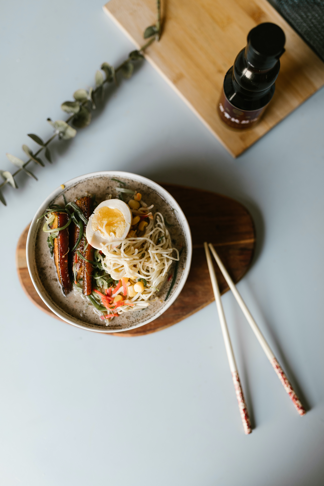

Ramen

Simple ramen dish to cozy up with during a anime bing session. It is a staple comfort food
that has been depicted many times across anime is a the prime dish to eat.
The food had humble beginnings being a cheap street food that gained populatrity,during the early
the 50s mainly due to it being a good source of nutrients during a post war japan were food
was difficult to come by.
Basic Ramen Composition
Ramen dish is usually comprised of the following increadients
- Noodles
- Eggs
- Vegatables
- sesame
- scallion
- broth
- Protein Source of your choosing(pork,chicken,beef,tofu,eggplant,etc,etc)
Cooking Instructions
- Pour table spoon of sesame oil into a pan and heat at a moderate temperature
- Once sufficiently heated add the place your desired Vegatables in the hot pan and
cook to a light simmer. Make sure to stir to avoid having
- Add the broth to pan and bring to a simmer. While the broth is cooking, bring another pan
with water to a boil to cook the noodles seperately.
- Once the noodles are tender, drain and rinse under cool water. Then transfer the noodles
to a bowl
- Slowly pour the simmering broth into the bowl
- While bowl is cooling down, use this opportunity to chop any vegetable toppings
such as scallions,onions, seaweed. Add them to the bowl for flavor and
aesthetic purposes.